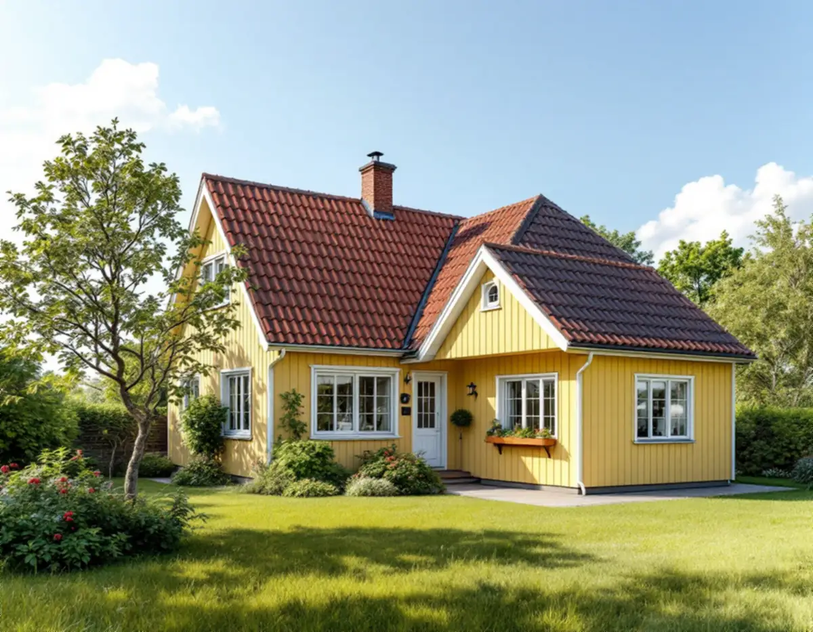
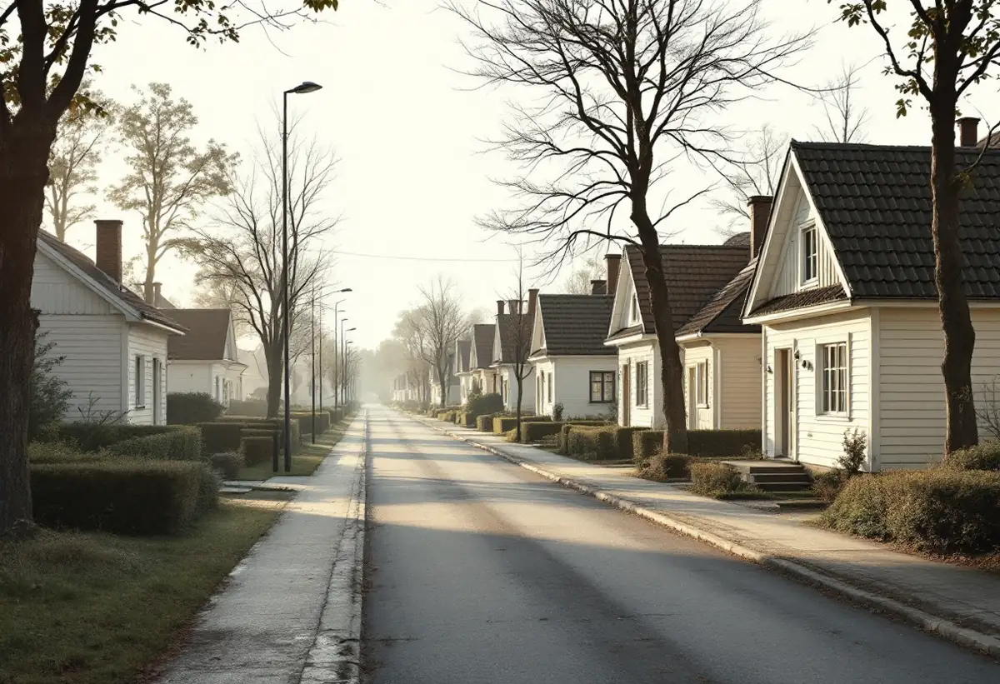
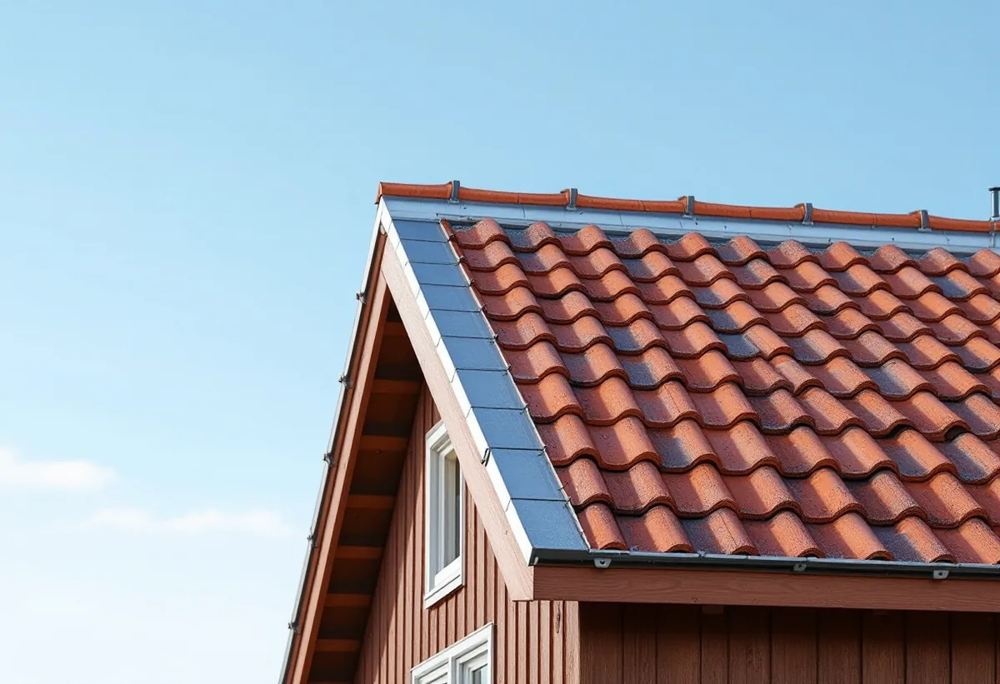

Platsbesök
Gratis besök där vi mäter stugan och tidigare tillbyggnader.
I Farsta står tusentals småhus, många av dem små stugor i Tallkrogen, Svedmyra och Sköndal som har vuxit med familjerna. Geal Entreprenad AB ritar och bygger tillbyggnader som följer stadens vägledning för småstugeområdena och tar hand om lov eller anmälan.

Stadens områdesfakta för 2025 räknar 4 713 småhus i Farsta stadsdelsområde, och 3 806 av dem ägs med äganderätt. I Tallkrogen fanns 941 småhus med äganderätt och i Svedmyra 327. Det är alltså många fastighetsägare som själva bestämmer över sina hus – och många som funderar på mer plats.
Stadens vägledning Varsam utveckling av småhus- och villaområden räknar Tallkrogen, del av Svedmyra och del av Sköndal till småstugeområdena. Tallkrogen står där som kulturhistoriskt värdefull miljö med ett äldre miljöprogram, och delar av Svedmyra och Sköndal som kulturhistoriskt värdefulla. Där kan bygglov krävas även för en tillbyggnad som annars hade varit lovfri.

Vägledningen beskriver småstugeområdenas enhetliga kvarter som ett viktigt karaktärsdrag. Det vanligaste är att tillbyggnader läggs in mot tomten, i den privata zonen på trädgårdssidan, och att man undviker att bygga mot gatan. Tillbyggnader mot gården bör placeras så att siktvyerna från gatan in mot trädgårdarna hålls öppna.
Vägledningen konstaterar också att många hus har byggts till genom åren, och att förändringarna huvudsakligen har gjorts mot trädgården. Det är därför områdena fortfarande känns sammanhållna. Vi ritar tillbyggnaden så att den syns så lite som möjligt från gatan och så att ljuset i huset blir bättre.
Vägledningen ber fastighetsägaren utgå från det ursprungliga husets volym, proportioner och takform. I ett av exemplen underordnar sig tillbyggnaden huvudbyggnaden: taknocken på tillbyggnaden ligger lägre än husets nock, medan takfoten ligger på samma nivå. Husets ursprungliga form ska fortfarande gå att läsa ut.
För en liten stuga med sadeltak blir det ofta en tillbyggnad med samma takvinkel och samma takfot, men med lägre nock. Vi ritar sektioner som visar hur takfallen möts, så att anslutningen går att bygga tät och snön inte blir liggande i vinkeln.
Stockholms stad skriver att en lovfri tillbyggnad får vara högst 30,0 kvadratmeter bruttoarea eller öppenarea och inte högre än husets taknock, och att alla lovfria tillbyggnader på huset räknas ihop. Boverket ger ett exempel: har du redan byggt en attefallstillbyggnad på 15 kvadratmeter och ett skärmtak på 15 kvadratmeter kan du inte bygga till mer utan bygglov.
Tillbyggnaden ska stå minst 4,5 meter från gräns, annars krävs grannens skriftliga medgivande, och minst 30 meter från en järnvägs mitt. Påverkas husets bärande delar eller brandskydd, eller ska tillbyggnaden få vatten och avlopp eller eldstad, krävs anmälan och startbesked. Läs mer om attefallshus i Farsta om du väger en tillbyggnad mot ett eget gårdshus, och om utbyggnader i allmänhet under tillbyggnad.

Gratis besök där vi mäter stugan och tidigare tillbyggnader.
Stadsmuseets karta och detaljplanen kontrolleras.
Tillbyggnad mot trädgården med lägre nock.
Bygglov i värdefull miljö, annars anmälan där det krävs.
Grund, stomme, tak och anslutning mot huset.
Den nya delen tas i bruk efter slutbesked.
Rotavdraget gäller arbetskostnaden, inte material. Skatteverket räknar en tillbyggnad av ett bostadshus som rotarbete om någon av dess sidor sitter ihop med husets yttervägg till minst 75 procent eller om en dörr förbinder de två delarna.
Bostaden ska vara äldre än fem år och större delen av den ursprungliga stommen ska behållas. Där avdraget gäller drar Geal det direkt på fakturan.
Storlek och grundläggning, hur takfallen ska mötas, om bärande väggar öppnas, våtrum och installationer, och om bygglov och ritningar för en kulturmiljö behövs. Efter ett gratis platsbesök får du ett skriftligt kostnadsförslag.
Mer boyta i samma hus.
Tillbyggnad →Takbyte, takbesiktning och plåtarbeten.
Takläggare i Farsta →Tallkrogens småstugor och villorna vid Magelungen.
Takrenovering i Farsta →Småstugor, kulturmiljö och gränser.
Attefallshus i Farsta →ABC-staden, radhus och asbest i våtrummet.
Badrumsrenovering i Farsta →En ny bostad i villan.
Byggföretag i Farsta →Tegel, puts, skivor och trädetaljer.
Fasadmålning i Farsta →Radhus, grupphus och fasadskivor.
Fasadrenovering i Farsta →Småstugor och radhus.
Fönsterbyte i Farsta →Småstugorna i Svedmyra och Sköndal.
Fönsterrenovering i Farsta →Linoleum, plastgolv och klinker i småstugan.
Golvläggare i Farsta →Slipa trägolvet och gå igenom resultatet.
Golvslipning i Farsta →ABC-staden, radhus och villor.
Köksrenovering i Farsta →Småstugor, ädelputs och radhus i Söderort.
Målare i Farsta →Skorstensbeslag och plåttak i Farsta.
Plåtslagare i Farsta →Förråd, gäststuga och skärmtak vid småstugan.
Snickare i Farsta →Radhusen, längan och föreningen.
Takbyte i Farsta →Tapet i 1960-talets lägenheter.
Tapetsering i Farsta →Småstugorna och typritningarna.
Totalrenovering i Farsta →